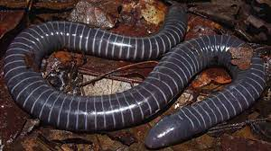

CECILIA PURPURA

Las cecilias, unas criaturas con aspecto de gusanos, tienen una piel suave y brillante y se parecen mucho a las serpientes. Con todo, la saliva de algunos de estos animales sin patas podría ser venenosa y es posible que se trate del primer ejemplo hallado en anfibios.La nueva especie fue descubierta en los bosques húmedos tropicales de la Serranía de los Yariguíes, zona rural del municipio de El Carmen de Chucurí, en la vereda La Belleza. Como viven debajo de la tierra es mucho más difícil de observarlas y buscarlas requiere de un esfuerzo de excavación que puede tomar horas y donde muchas veces es posible que no se encuentre ni una cecilia.
- Las cecilias pertenecen a uno de los grupos de anfibios más desconocidos y difíciles de encontrar.
- Son animales que viven en el suelo y suelen confundirse con serpientes y gusanos.
- Comprenden actualmente 34 especies, 18 se encuentran en Colombia, de las cuales ocho son endémicas de este país.
- Son animales que habitan en suelos húmedos y bastante saturados, usualmente cerca de fuentes de agua y de vegetación frondosa.
- Las cecilias pertenecen a uno de los tres grandes grupos de anfibios que existen.
MENU